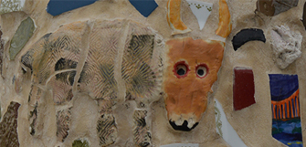
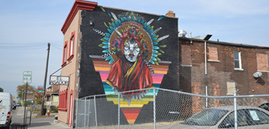
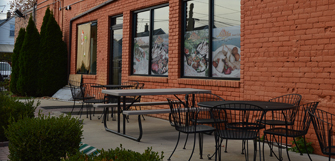
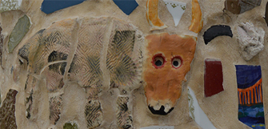
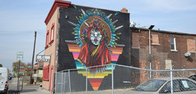
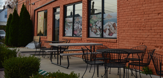

About Me
I am an Assistant Professor of Urban and Regional Planning at the University of Michigan. My research explores the cultural, economic, and political aspects of urban space. I earned a masters degree in geography from the University of Oxford and a PhD in geography from the University of California, Berkeley. I then received a three-year fellowship with the Society of Fellows at the University of Michigan, and subsequently joined Michigan’s Taubman College of Architecture and Urban Planning. I am the author of DIY Detroit: Making Do in a City without Services (University of Minnesota Press, 2016) and The Politics of Urban Water: Changing Waterscapes in Amsterdam (University of Georgia Press, 2015).
Contact Information
Dr. Kimberley Kinder
Assistant Professor of Urban and Regional Planning
University of Michigan
2000 Bonisteel Boulevard, Suite 2150
Ann Arbor, MI 48109-2609
734-615-7252
kkinder@umich.edu
https://taubmancollege.umich.edu/faculty/directory/kimberley-kinder


 





Research
As a social and cultural geographer, I work in urban contexts where I study the relationship between space and society. Space for me includes architecture, aesthetics, landscapes, the relationship between spaces, and the rules governing space. And my attention to society involves looking at social engagement from a bottom-up perspective with a special focus on informality, provisional use, and everyday life.
I study the relationship between space and society in many contexts. For instance, in The Politics of Urban Water: Changing Waterscapes in Amsterdam (University of Georgia Press, 2015), I analyzed how people use waterways – the space of canals, lakes, and rivers – as spaces for political organizing around social issues like affordable housing, cultural tolerance, and national heritage. Next in DIY Detroit: Making Do in a City without Services (University of Minnesota Press, 2016), I studied how people use residential landscapes – especially the spaces of abandoned housing, vacant lots, and neighborhood parks – as mediums for informal governance so that changing the architecture and aesthetics of those spaces helps residents negotiate the changing social norms of disinvested neighborhoods. I then completed a small side project on Muslim Arab-American immigrants in Detroit’s inner-ring suburbs where I looked at how people retrofitted storefront retail spaces to transform white, Christian, suburban settings into environments supporting suburban populations with a greater range of cultural difference.
In all three projects, one of the common themes was the question: How do people use space – canals, housing, storefronts – and change space to enable other ways of living and interacting in the world? What material, architectural, and aesthetic strategies help people make the built environment socially relevant and useful in these ways? And what social outcomes do these spatial interventions facilitate?
Those are some of the key questions threading through my research, and those questions are guiding my current project, as well. My current project – Infrastructures of Dissent: Place, Text, and Activism in Radical Independent Bookselling – picks up on the theme of retail space, this time by exploring how people in many cities use the format of “radical neighborhood bookstores” to advance social justice. Across the country, people are mobilizing to defend progressive political ideals, but activism is not evenly distributed. Like flows of capital and chains of migration, activism gets structured into geographic circuits with pathways and hotspots. This project explores how people route social activism in and out of the built environment. Using examples from progressive bookstores, infoshops, and publishing collectives, this project analyzes the material, territorial, and symbolic strategies people use to convert retail environments into resources for political engagement. The analysis emphasizes place-making as an activist technique transforming everyday spaces into transformational spaces for empowerment and dissent.
Link to Publications

Teaching
I teach courses on urban theory and urban place-making. My curriculum highlights the messy interconnections that suture physical forms and social processes together. In my classroom, alongside canonical city planning texts, I teach literature from sociology, anthropology, history, and geography, and I expose students to a wide range of case studies from domestic and international contexts. This comparative, interdisciplinary approach encourages students to evaluate planning techniques from many perspectives, in many contexts, and with many possible metrics of success. I also encourage students to hone their critical reading, writing, and communication skills. Students in my classes routinely prepare written responses to course readings and then use class time presenting ideas to peers, asking probing questions, and engaging in group debates. These techniques, which prioritize the development of critical thinking abilities alongside city planning skills, help students gain a broad understanding of the direct and indirect political, economic, and cultural implications of their professional work.
Courses Taught
- Urban Planning 501: Planning Theory and History
- Urban Planning 506: Spatial Thinking and Environmental Systems
- Urban Planning 533: Healthy Cities: Planning and Design
- Urban Planning 570: Metropolitan Structure
Previous teaching includes courses on the Theory of Urban Design, Social Justice and the City, Political Ecology of the Third World, Food and the Environment, and a Special Seminar in Water Politics.


Kinder, Kimberley. DIY Detroit: Making Do in a City without Services. University of Minnesota Press, 2016.
For ten years James Robertson walked the twenty-one-mile round-trip from his Detroit home to his factory job; when his story went viral, it brought him an outpouring of attention and support. But what of Robertson’s Detroit neighbors, likewise stuck in a blighted city without services as basic as a bus line? What they’re left with, after decades of disinvestment and decline, is DIY urbanism—sweeping their own streets, maintaining public parks, planting community gardens, boarding up empty buildings, even acting as real estate agents and landlords for abandoned homes.
DIY Detroit describes a phenomenon that, in our times of austerity measures and market-based governance, has become woefully routine as inhabitants of deteriorating cities “domesticate” public services in order to get by. The voices that animate this book humanize Detroit’s troubles—from a middle-class African American civic activist drawn back by a crisis of conscience; to a young Latina stay-at-home mom who has never left the city and whose husband works in construction; to a European woman with a mixed-race adopted family and a passion for social reform, who introduces a chicken coop, goat shed, and market garden into the neighborhood. These people show firsthand how living with disinvestment means getting organized to manage public works on a neighborhood scale, helping friends and family members solve logistical problems, and promoting creativity, compassion, and self-direction as an alternative to broken dreams and passive lifestyles.
DIY Detroit reveals how the efforts of these Detroiters and others like them create new urban logics and transform the expectations residents have about their environments. At the same time DIY Detroit cautions against romanticizing such acts, which are, after all, short-term solutions to a deep and spreading social injustice that demands comprehensive change.

Kinder, Kimberley. The Politics of Urban Water: Changing Waterscapes in Amsterdam. University of Georgia Press, 2015.
Fifty years ago, urban waterfronts were industrial, polluted, and diseased. Today, luxury homes and shops line riverbanks, harbors, and lakes across Europe and North America. The visual drama of physical reconstruction makes this transition look swift and decisive, but reimaging water is a slow process, punctuated by small cultural shifts and informal spatial seizures that change the meaning of wet urban spaces. In The Politics of Urban Water, I explore how active residents in Amsterdam deployed their cityscape when rallying around these concerns, turning space into a vehicle for social reform.
While market dynamics certainly contributed to the transformation of Amsterdam’s shorelines, squatters, partiers, artists, historians, environmentalists, tourists, reporters, and government officials also played crucial roles in bringing waterscapes to life. Their interventions pulled water in new directions, connecting it to political discussions about affordable housing, cultural tolerance, climate change, and national identity. Over time, these political valences have become embedded in laws, norms, symbols, markets, and landscapes, bringing rich undercurrents of friction to urban shores. Amsterdam’s development serves as both an inspiration and a cautionary tale for cities across Europe and North America where rapid new growth creates similar pressures and anxieties.
http://www.ugapress.org/index.php/books/index/politics_of_urban_water
Kinder, Kimberley. “Technologies of Translocality: Vegetables, Meat, and Dresses in Arab Muslim Detroit.” International Journal of Urban and Regional Research (forthcoming, accepted April, 2016).
The diversification of US suburbs in race, ethnicity, and immigration has created invaluable opportunities for scholars to study technologies of translocality in-the-making. Translocal landscapes are described as spaces of “here” studded with “parts of elsewhere,” but which pieces of the landscape count as meaningfully “of elsewhere,” how do those parts get there, and what range of meanings can they signify? This article uses qualitative, in-depth interviews to explore those questions in the context of an Arab Muslim ethnic enclave and retail district in an inner-ring suburb of Detroit. The findings indicate that “parts of elsewhere” are more internally plural, multi-functional, multi-directional, and aesthetically diverse than commonly recognized. The implications of these findings challenge scholars to develop more robust frameworks to explain how translocal geographies are produced, why they matter, and how they can be recognized.
http://onlinelibrary.wiley.com/doi/10.1111/1468-2427.12414/abstract
Kinder, Kimberley. “Guerrilla-Style Defensive Architecture in Detroit: A Self-Provisioned Security Strategy in a Neoliberal Space of Disinvestment.” International Journal of Urban and Regional Research 38, no. 5 (2014): 1767-1784.
Self-provisioning has long been an important component of urban political economic processes. However, it has recently become a central feature of grassroots urban governance strategies, as well. In tumultuous cities of the 21st century, with governments either unable or unwilling to enforce zoning laws, police neighborhoods, or manage infrastructure, some householders have begun performing these services instead. This article examines one subset of self-provisioning practices that has emerged in southwest Detroit where residents have taken steps to secure abandoned housing as a means of exerting social control over their living environment. These actions embody many contradictions and ethical dilemmas, and the intimate scale of action has left the structural production of disinvestment in places like Detroit largely unchecked. Nevertheless, these guerilla-style spatial interventions have emerged as critically important response strategies helping residents reduce their vulnerability and stabilize their blocks even as other nearby areas continue to experience decline.
http://onlinelibrary.wiley.com/doi/10.1111/1468-2427.12158/abstract
Kinder, Kimberley. “Planning by Intermediaries: Making Cities Make Nature in Amsterdam.” Environment and Planning A 43, no. 10 (2011): 2435—2451.
This analysis of urban wetland restoration in the Netherlands examines how theories of distributed agency are changing the way planners approach city-building tasks. Illusions of a static, prehuman nature are falling by the wayside, and the negative environmental consequences of urban expansion are gaining notoriety. Green Design strategies that, among other things, espouse bringing nature back into the city alleviate many problems. But ecoconscious planners working on Amsterdam’s IJburg neighborhood have set their sights higher by attempting to turn cities into nature’s womb. And instead of making this nature directly through nurseries and fisheries, planners are instead working to create a field of action that will spontaneously create wild nature at a considerable distance from planners’ hands. In reviewing these experiments, this paper shows how planners marshal lake currents, plant spores, and flying birds alongside bulldozers and cranes to build homes and make wetlands.